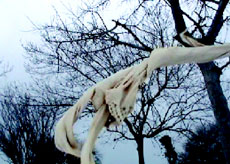

|
SALON ISTANBUL
NAZAN AZERI
My Mother’s Wedding Dress | TR 2008 | 4'
www.nazanazeri.net
Nazan Azeri is memorializing her mother with a series of painting, photography and video. Her mourning is reflected on her mother’s wedding dress, very likely the last piece of memento. The wedding dress is displaced in a heavy wind, as it is mysteriously floating on the branches of a tree. The poetic ensemble of work exploiting the wedding dress-traditionally the symbol of virginity, virtue and innocence- as an indicator, is an elegy for women violations in Turkey.
Nazan Azeri was born in 1953 in Bursa, TR. She lives and works in Istanbul. In Azeri’s work since the beginning of 1990s when she decided to be an artist after studying law, there are mainly research based works dealing with themes of gender, imposed social roles and Turkey’s political deadlocks that invade the life and influences the decisions of individuals.
zurück
|